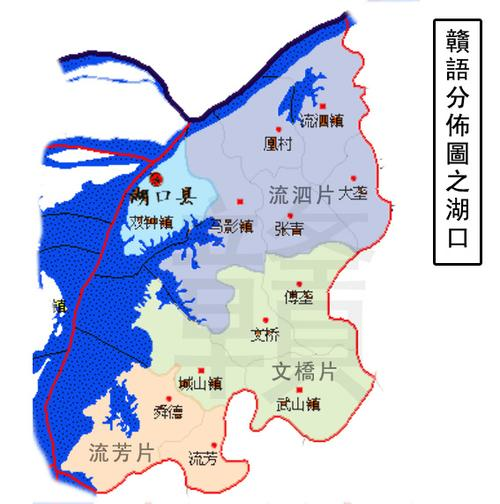
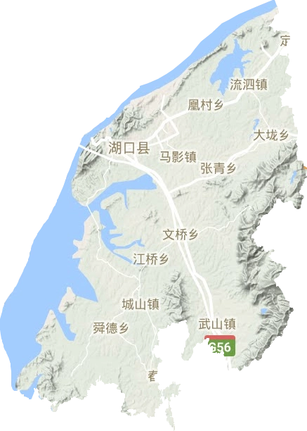

湖口县因位于长江与鄱阳湖交汇处而得名 中国第一大河流(长江)与中国第一大淡水湖(鄱阳湖)在此汇合。 湖口县得名于南朝宋所置湖口戍。 清康熙《湖口县志》载:“湖口,以在彭蠡湖之口故名。”据《太平寰宇记》记载:“湖口县,本湖口戍,是南朝旧镇。
唐武德五年（623），安抚使李大亮以为要冲，遂置镇在彭蠡湖口，伪唐保大年中升为县。”另据《湖口县志》记载：“南唐升元二年（938），始析彭泽县之彭泽乡、五柳乡之半为湖口县。”湖口建县始此，初置属江州。 宋，属浔阳郡；宋建炎元年（1127），属定江军；建炎二年（1128），属江州路。 元至元十二年（1275），属江东西宣抚司；至元十三年（1276），属江西大都督府，隶扬州行省；至元十四年（1277），属江州路，隶龙兴行都元帅府，后隶行中书省；至元十六年（1279），隶黄蕲等路宣慰司；至元二十二年（1285），复隶行中书省。 明、清，隶属九江府。 咸丰四年（1854年）三月，太平天国改湖口县为九江郡，以九江府为江西省。 太平天国失败后恢复湖口县，仍属九江府。 1912年，江西省设道，隶属浔阳道。 1926年，废道设行政区，属江西省第三行政区。 1935年，划入江西省第五行政区。 1949年4月28日解放，隶属华东赣东北行政区鄱阳专区；1949年8月，划归江西省九江地区。 1983年8月，隶属九江市。
位于江西省北部、九江市东部、长江中下游南岸、鄱阳湖北畔，赣皖鄂三省交界处，介于北纬29° 30'- 29°51' 、东经116°8'-116°25' 之间。湖口县面积669平方公里 ，东邻彭泽县，南接都昌县，西与濂溪区、柴桑区、庐山市隔鄱阳湖相望，北与安徽省安庆市宿松县襟长江为界。湖口县属亚热带季风气候区，热量丰富，雨量充沛，四季分明。
湖口县属鄱阳湖平原，但丘陵地貌突出，山丘起伏，港汊纵横。 湖口县国土面积669.33平方公里，有80%在海拔50米以下，山地面积占22.01%，水域面积占20.8%，耕地面积占25.1%。地形结构东南群山环抱，西北江湖环绕，中部小丘垄埂起伏，总的趋势由东南向西北倾斜。鄱阳湖在县境西部流经27公里，境内水域90.3平方公里；长江沿县境北部流经17公里，境内水域15.25平方公里；江湖岸线51公里，其中沿江22公里、沿湖29公里。
湖口县属紫色土壤。 紫色土壤是我国的一种特殊土壤类型，是亚热带地区由富含碳酸钙的紫红色砂岩和页岩上的初，土壤中的紫色大都富含钙质（碳酸钙）和磷、钾等营养元素，紫色土母岩松疏，易于崩解，矿质养分含量丰富，肥力较高，是中国南方重要旱作土壤之一。 江西省土壤类型主要有13种：红壤、黄壤、黄棕壤、风沙土、石灰土、紫色土、草甸土、林灌草甸土、山地草甸土、潮土、沼泽土、泥炭土、水稻土。
鄱阳湖在湖口县境西部流经27公里，境内水域90.3平方公里；长江沿县境北部流经17公里，境内水域15.25平方公里；江湖岸线51公里，其中沿江22公里、沿湖29公里。
湖口县属亚热带季风性气候区，热量丰富，雨量充沛，四季分明。年平均气温17.4℃，积温在5358.7—5402.1℃；最冷月（1月）平均气温4.2℃，最热月（7—8）平均气温28.8℃，有记载极端最低温-10.3℃、极端最高温40.3℃；常年无霜期258.8天；年平均降水量1442.5毫米；全年实际日照总时数平均1983.8小时，日照率为45%。 湖口县受寒潮和季风影响，湖口县灾害性天气主要有春季低温阴雨，春夏季暴雨，夏秋干旱和干热风，冬季寒潮大风和冻害。其中以暴雨与长江、鄱阳湖外涝引起的洪涝造成的危害最大。在三峡水库建成前统计，大水（水位年内变幅大于30%）平均8年一遇，中水（水位变幅10~30%）平均4年一遇；历史最高水位22.58米（1998年8月1日），最低水位5.9米（1963年2月6日）。

湖口历史悠久，新石器晚期这里就有人类定居，夏、商时属扬州南境，春秋、战国先后属吴、越、楚，秦属九江郡，汉初属豫章郡彭泽、枭阳二县，东汉建武二年(公元26年)全境属彭泽县。晋陶渊明为彭泽令时，治所在今湖口均桥镇柳德昭自然村。南朝·宋(公元420—479年)始设湖口戍，仍隶属彭泽县。南唐升元二年(公元938年)析彭泽县之彭泽乡及五柳乡之半置湖口县，县治枭阳镇(今双钟镇西南)，隶属奉化军。湖口作为一级行政区域始于此(另有一说:南唐保大中，约公元950年升湖口戍为湖口县)，至今一千多年从未易名。宋元时隶属江州，明清时隶属九江府。民国元年(1912年)江西省划为四道，湖口县属浔阳道。1926年全省划为13个行政区，湖口县属于第三行政区。1935年全省改为8个行政区，湖口县划入第五行政区(区治所浮梁)。1949年5月上旬，湖口县解放，隶属华东区的赣东北行政区鄱阳专区，同年8月划归华中区的江西省九江地区。1983年8月九江地市合并为九江市，湖口县隶属九江市。
湖口县矿产资源基本属于非金属矿，石灰石、粗砂、陶土、陶土、风化石等蕴藏量丰富，其中石灰石蕴藏量1.5亿吨，风化石蕴藏量1200万吨，陶土蕴藏量2.12吨。 由于地处鄱阳湖和长江的交界处，县域水资源比较丰富，建有大大小小50座水库。良好的地理位置给湖口县带来了丰富的自然景观资源，这里的旅游业发展和繁荣，著名景点有鄱阳湖、鞋山、石钟山、龙宫洞、天山胜景、水上古战场游乐园、湖口八景等。山水景观优美，还建有现代化的游乐场所。
湖口境内植物类型很多。植物区系以华东区系成分为主。 森林植物主要集中在鄱阳湖，依次有常绿阔叶林、针阔叶混交林、叶林和灌丛草甸等植被类型。 植物资源丰富，湖口境内有资源植物900多种.特别是湖口有极其丰富的经济植物，据统计共有经济植物90余种，鄱阳湖沿岸已发现的药用植物就有65多种，有广阔的综合利用前途。 野生中药材有500多种，其中有蔓荆子、马鞭草、紫珠草、过江藤、大青叶、龙葵、徐长卿、柳叶白前、萝摩、夹竹桃、仙桃草、鹿茸草、紫葳、樟树、龙胆草、茜草、白花蛇舌草、栀子、金银花、陆英、白花败酱、车前石胡荽、野胡萝萄、苍耳、艾、旱莲草、野菊、蒲公英、泽兰、刘寄奴、三七草、牛蒡、苍术、茵陈蒿、菊花、旋复等。
湖口境内有野生动物10纲44目323种，受国家一类保护的有白鱀豚、中华鲟、朱鹮、东方白鹳、黑鹳、秋沙鸭、白鹤、遗鸥等；野生植物60科206种，受国家一类保护的有苏铁、银杏、水杉、珙桐等；野生药材81科209种，列为国家重点保护的品种有细辛、厚朴、杜仲、连翘、贝母、石斛等。
湖口滨湖临江，河港密布，水域总量19016.54公顷，占疆境面积的28.2%。其中湖泊水面占水域总量的46.4%，河港水面占23.2%，水库水面和坑塘分别占6.9%和13.2%。1989年，全县水资源总量4.13亿立方米，其中地表水3.96亿立方米，地下水0.17亿立方米。人均1690立方米，亩均1607立方米。2011年，全县水资源总量388亿立方米。人均1314立方米。此外还有长江、鄱阳湖过境水达8900亿立方米。 县境内水资源除鄱阳湖、长江外，主要来源大气降水，地表水及地下水均来源于降水。 境内河流水能，理论蕴藏量为3827千瓦（保证率75%），可供开发利用值约为1262千瓦，占理论蕴藏量33%。
截至2022年12月，湖口县下辖5乡7镇2场，面积674平方公里，县政府驻地双钟镇台山大道1号
2021年末2022年初全县户籍人口为289065人；其中城镇人口95025人，乡村人口194040人。根据2021年湖口县人口变动抽样调查数据推算，湖口县2021年末常住人口222197人，较2020年第七次全国人口普查相比人口减少5265人，下降2.3%。其中，城镇常住人口122827人，农村常住人口99370人，城镇化率达到55.28%。全年出生人数2065人，人口出生率6.12‰，死亡人数1076人，死亡率2.98‰，自然增长率3.14‰。出生人口性别比为120.38。
2019末2020初全县户籍人口为295119人；其中城镇人口91520人，乡村人口203599人。根据人口变动情况抽样调查统计，年末全县常住人口为286465人，比上年末增长1031人，人口城镇化率为50.96%。据卫健委统计数据,全年出生人数3111人，人口出生率9.32‰，死亡人数1202人，死亡率3.6‰，自然增长率5.72‰。出生人口性别比为115.59。
2018年末全县户籍人口为297308人；其中城镇人口90188人，乡村人口207120人。根据人口变动情况抽样调查统计，年末全县常住人口为285434人，比上年末增长1287人，人口城镇化率为49.30%。据计生委统计数据,全年出生人数3618人，人口出生率10.94‰，死亡人数1421人，死亡率4.3‰，自然增长率6.65‰。出生人口性别比为113.33。
2022年末，湖口县汉族人口占绝大部分，达到了99.94%，全县有回族、满族、蒙古族、羌族等10个少数民族，共120多人，占27万总人口的0.04%。

游秀美湖口,观江湖两色。
welcome to hukou|湖口欢迎您！